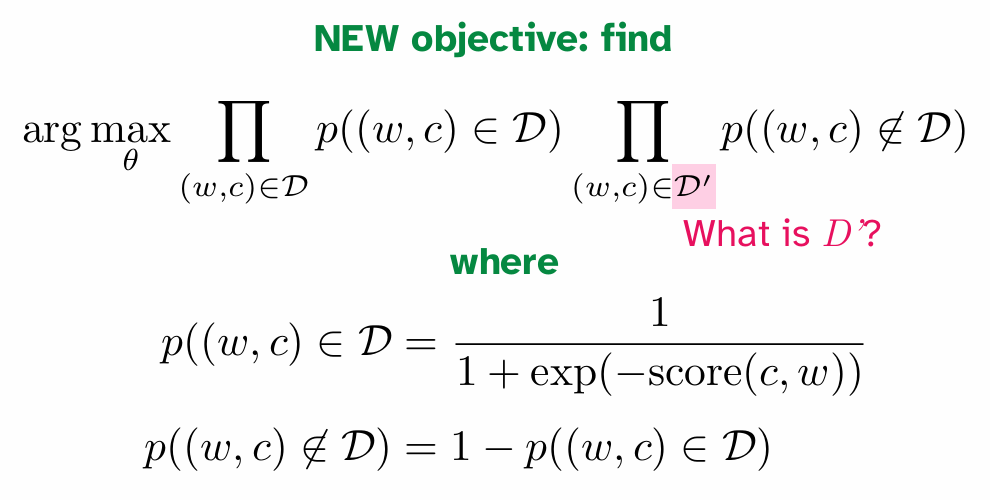
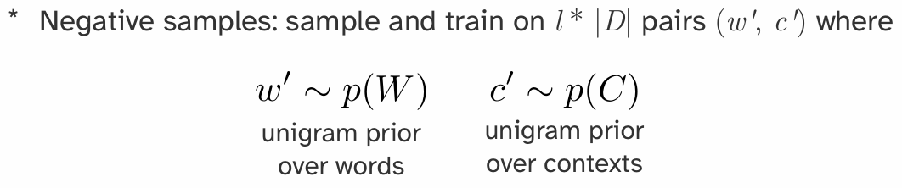
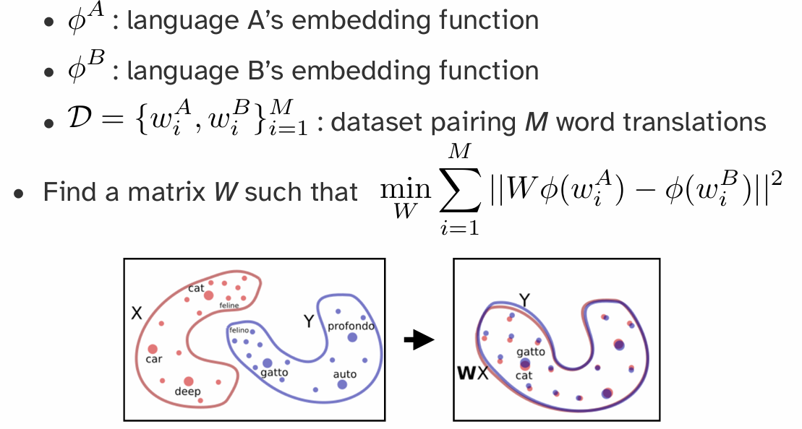

Linguistics: Speech and Lexical Semantics
Part 1: 语言学基本单元 (Linguistic Units)
语言可以被分解为不同层级的结构单元 。
- 音位/字位 (Phonemes/Graphemes): 语言中最小的声音/书写单位，能够区分意义 。
- 示例：英语元音 (GA English vowels)，美国手语的 Stokoe 标记法，汉字笔画 。
- 词素/词位 (Morphemes/Lexemes): 最小的有意义的语言单位 。
- 示例：美国手语中的口型词素 (CHA 表示大, OO 表示小)，德语动词
fegen的变位，印尼语ajar(教) 添加不同词缀 。 - 单词 (Words): 由一个或多个词素构成的独立单位 。
- 成分/短语 (Constituents/Phrases): 句子中充当一个单元的一组词 。
- 句法歧义 (Syntactic ambiguity) 展示了短语结构的重要性 。
- 话语/句子 (Utterances/Sentences): 表达一个完整思想的语言单位 。
- 篇章/对话 (Discourse/Dialogue): 由多个句子组成的更大语言单元，是语言最自然的使用形式 。
Part 2: 语音处理 (Speech Processing)
2.1 语音的产生 (Speech Production)
-
生理过程: 空气流经声道发音器官 (vocal articulators)，如声带 (vocal folds)、舌头 (tongue)、下巴 (jaw)、嘴唇 (lips) 等，通过独立或协同控制产生语音
-
发声 (Voicing): 声带的振动导致了发声 。
-
声学结果: 最终的输出是一个声学压力波 (acoustic pressure wave) 。
### 2.2 语音的表示 (Speech Representations)
声学波形 (Acoustic Waveform): 语音可以直接表示为随时间变化的振幅波形图 。
缺点: 波形是连续的时间序列，难以直接分析、解释或计算 。
信号处理: 需要通过信号处理技术提取更有用的信息 。
短时傅里叶变换 (Short-Time Fourier Transform):
-
加窗 (Windowing): 将语音波形切分成很多个短的、有重叠的时间窗口（例如，窗长 25ms，步长 10ms）。
-
傅里叶变换 (Fourier Transform): 对每个窗口内的信号执行傅里叶变换，将其从时域转换到时频域 (time-frequency representation) 。这能揭示在该时间片内哪些频率是显著的 (prominent) 。
语谱图 (Spectrogram):
生成: 将每个时间窗口的频率分析结果堆叠起来，形成一张图。其中，x轴是时间，y轴是频率，颜色的深浅（像素强度）表示在该时间点上对应频率的能量（声压级）。
- 特点: 语谱图是一种信息丰富的二维表示，可以直观地看出声音随时间的变化。
- 共振峰 (Formants): 语谱图上能量集中的水平条纹，是区分不同元音的关键声学特征，由声道形状决定 。
- 清音/浊音 (Unvoiced/Voiced): 语谱图可以区分浊音（有声带振动，低频有能量）和清音（无声带振动）。
2.3 音韵学与语音学 (Phonology and Phonetics)
- 语音学 (Phonetics): 研究语音的声音物理产生、频谱属性和感知属性的学科 。
发音语音学 (Articulatory Phonetics): 研究发音器官如何产生声音。例如，元音 [iy] (beet) 和 [ae] (bat) 的舌位和颚部位置不同 。
声学语音学 (Acoustic Phonetics): 研究语音的声学特性，如语谱图分析 。
-
音位 (Phonemes): 感知上可区分的最小语音单位 。语谱图揭示了具有不同属性的语音片段结构，这些就是音位 。
-
国际音标 (International Phonetic Alphabet - IPA):
-
由音位学家编制的一套通用符号，用于精确地记录各种语言中的语音 。
- 英语拼写 (orthography) 与发音不一致，约 40 个音位由 26 个字母表示 。
- 元音 (Vowels): 由下颚张开度 (jaw aperture) 和舌头前后位置 (tongue frontness) 来表征，部分元音还涉及嘴唇形状 。
-
辅音 (Consonants): 由发音部位 (place of articulation, 如唇音 labial) 和发音方式 (manner of articulation, 如爆破音 plosive) 来表征 。
-
音韵学 (Phonology): 研究语言中声音组织规律的学科（音位 -> 音节 -> 单词）。
音节结构 (Syllable Structure): 不同语言有不同的音节构成规则。
- 英语: (C3)V(C4) -
strengths/strɛŋkθs/ - 夏威夷语: (C)V(C)
-
格鲁吉亚语: (C8)V(C5) - გვბრდღვნის /ˈɡvbrdɣvnis/
-
音节由音首 (Onset) 和韵基 (Rhyme) 构成，韵基又包含韵核 (Nucleus) 和韵尾 (Coda) 。
-
字母到发音 (Letters to Sounds):
-
发音词典: 如 CMU 发音词典，提供了超过 11 万英语单词的音节和音位拼写 。
- Arpabet: 一种方便 ASCII 表示的 IPA 版本 。
- 发音变体 (Sound Variation): 发音会因方言、母语影响、语境、语言随时间演变等因素而不同 。研究表明，人类在出生前就已经在学习声音 。
Part 3: 词汇与分词 (Words and Tokenization)
3.1 类型与实例 (Types and Tokens)
- 核心概念: 文本数据可以看作是单词的序列 。
- 类型 (Type): 在语料库中一个独一无二的词 。所有 Types 构成词汇表 (Vocabulary) 。
- 实例 (Token): 一个 Type 在特定上下文中出现的具体实例 。
- 数字化表示: 文本可以转换为一个整数序列，其中每个整数是其对应 Token 在词汇表中的索引 。词汇表则作为查询表 。
3.2 分词 (Tokenization)
分词是将原始文本字符串转换为 Token 序列的过程。
- 按空格分词: 最简单的方法，但会导致标点符号与单词粘连（如
dialogue:）。
基于规则的分词 (Rule-Based Tokenization):
- 使用更复杂的规则（如
nltk.word_tokenize）来处理标点符号 。 - 问题 1: 无法处理形态相似但不同的词（如
readingvs.read）。 - 问题 2: 规则通常是语言特定的，不适用于所有语言（如泰语没有空格分隔）。
-
问题 3: 词汇表是固定的。一旦 tokenizer "训练"完成，就无法处理词汇表之外的新词 (Out-of-Vocabulary, OOV)，例如
ChatGPT。- 解决方法: 引入一个特殊的
<UNK>(unknown) token 来表示所有未知单词 。
- 解决方法: 引入一个特殊的
-
按字节/字符分词 (Bytes as Wordtypes):
-
将字符串编码为其底层的字节序列 (如 UTF-8) 。
- 优点 1: 词汇表大小是固定的（所有可能的 Unicode 字符），完全消除了 OOV 问题。
- 优点 2: 这是真正意义上与语言无关的方法。
- 缺点: 单词的语义单元被打破，导致序列变得非常长，模型需要学习从零开始组合字符的意义，增加了学习难度。
BPE算法将会单独详细介绍。
3.3 学习分词器 (Learned Tokenizers)
现代 NLP 采用基于数据驱动的方法来学习分词。
- 目标: 在“将词切得太碎”（如字符）和“词汇表太大”（如单词）之间找到一个平衡点。
- 子词分词 (Subword Tokenization):
- 核心思想: 常见词保持为完整单元，罕见词被拆分为有意义的子词单元。
- 示例:
unaffable->un-,aff,able。 - 字节对编码 (Byte-Pair Encoding - BPE):
- 初始化: 词汇表由所有单个字符组成。
- 迭代合并: 迭代地在语料库中找到最频繁出现的相邻 token 对，并将它们合并成一个新的、更长的 token，加入到词汇表中。
- 终止: 当词汇表达到预设大小时停止。
Part 4: 词汇语义学与词嵌入 (Lexical Semantics & Word Embeddings)
4.1 词义 (Word Meaning)
- 词汇语义学 (Lexical Semantics): 研究单词意义的学科。
- 词义 (Sense/Concept): 一个词所代表的思想或概念。
- 引理 (Lemma): 代表相同核心意义的一组词形（如
run,runs,running的引理是run）。 - 同形异义词 (Homonymy): 拼写和发音相同，但意义不相关的词（如
bank可以指银行或河岸）。 - 多义词 (Polysemy): 一个词有多个相关联的意义（如
bank可以指金融机构或血库）。
4.2 词汇关系 (Lexical Relations)
- 同义词 (Synonymy): 意义相同或相近的词（如
sofa/couch）。 - 反义词 (Antonymy): 意义相反的词（如
big/small）。 - 上下位关系 (Hyponymy/Hypernymy):
- 下位词 (Hyponym): 更具体的概念（如
dog是animal的下位词）。 - 上位词 (Hypernym): 更泛化的概念（如
animal是dog的上位词）。 - WordNet: 一个大型的、人工构建的英语词汇数据库，它将单词组织成同义词集 (synsets) 并定义了它们之间的语义关系。
4.3 分布式语义 (Distributional Semantics)
- 分布式假设 (Distributional Hypothesis): "一个词的特性取决于它所在的上下文 (the company it keeps)" - J.R. Firth。
- 核心思想: 意义相似的词倾向于出现在相似的上下文中。
- 词嵌入 (Word Embeddings): 将单词表示为低维、稠密的实数向量。这些向量旨在捕捉单词的语义信息。
- 目标: 在向量空间中，语义相似的单词彼此距离更近。
4.4 基于计数的词嵌入方法
- 词-文档共现矩阵 (Term-Document Matrix):
- 行代表单词，列代表文档。
- 矩阵单元格
(w, d)的值表示单词w在文档d中出现的次数。 - 问题: 向量维度太高（文档数量），且非常稀疏。
- 词-词共现矩阵 (Word-Word Co-occurrence Matrix):
- 行和列都代表词汇表中的单词。
- 单元格
(w1, w2)的值表示w1和w2在一个固定大小的上下文窗口内共同出现的次数。 - 问题: 矩阵仍然非常庞大和稀疏，并且计数偏向高频词。
- TF-IDF (Term Frequency-Inverse Document Frequency):
- 对原始计数进行加权，以平衡词频和文档频率。
- TF(t, d): 词
t在文档d中的频率。 - IDF(t):
log(总文档数 / 包含词 t 的文档数)。罕见词的 IDF 值更高。 - TF-IDF = TF * IDF。
- 点互信息 (Pointwise Mutual Information - PMI):
- 衡量两个事件（单词共现）的关联性是否强于随机情况。
- PPMI (Positive PMI):
max(0, PMI(w1, w2))。只保留正相关性。 - 使用 PPMI 矩阵代替原始计数矩阵可以得到更好的词向量。
- 降维 (Dimensionality Reduction):
- 使用奇异值分解 (Singular Value Decomposition - SVD) 等技术将高维稀疏矩阵（如 PPMI 矩阵）分解为低维稠密矩阵，从而得到最终的词嵌入。
4.5 基于学习的词嵌入方法 (Learned Embeddings)
- 核心思想: 直接学习一个模型，其参数就是词嵌入向量。通过在一个代理任务 (proxy task) 上进行训练来优化这些向量。
- Word2Vec (Mikolov et al. 2013):
- 代理任务: 预测一个词的上下文，或从上下文预测一个词。
- Skip-grams: 给定一个中心词，预测其周围的上下文单词。
- CBOW (Continuous Bag-of-Words): 给定上下文单词，预测中心词。
- 优化: 使用负采样 (Negative Sampling) 等技术高效地进行训练。
- GloVe (Global Vectors):
- 结合了基于计数的方法（利用全局共现统计信息）和基于学习的方法（使用模型优化）的优点。
- 优化目标直接基于词-词共现矩阵的概率比率。
4.6 词嵌入与现代大型语言模型 (LLMs)
-
LLM 之前的时代:
-
从网上下载预训练好的词嵌入（如 Word2Vec, GloVe）。
- 用这些嵌入初始化模型的输入层。
-
在特定任务数据上微调模型的其他参数（有时也微调嵌入本身）。
-
好的预训练嵌入对于数据量少的任务至关重要。
-
现在的 LLM 时代:
-
我们不再单独下载词嵌入，而是下载整个预训练好的语言模型。
-
语言模型内部仍然为每个 token 学习特定的嵌入，但这些嵌入是模型的一部分，与模型的其他部分一起端到端地训练和使用。
-
为什么仍要关心词嵌入?
-
分析与评估: 用于评估 LLM 学到的概念空间与人类概念空间的关联性。
- 历史视角: 现代 LLM 的许多架构设计都源于早期的词嵌入和句子表示研究（如 ELMo）。
4.7 句子表示 (Sentence Representations)
- 问题: 有了单词的表示，如何得到整个句子的表示？
- 简单方法: 词袋模型 (Bag-of-Words)，例如对句子中所有单词的词嵌入向量取平均值。
- 缺点: 丢失了单词的顺序和句法结构信息。
Part 5: Byte Pair Encoding
这是现在最常用的tokenizer。输入的是：collection of texts and target vocabulary size。最开始的vocabulary就是全部文本的所有的bytes(characters)。直到vocabulary size达到目标，重复一下的步骤：
- Tokenize all of the texts using the current vocabulary
- Find the most common bigram in the tokenized texts, then add it to the vocabulary as a new wordtype
也就是说，用目前的vocabulary进行一次tokenization，然后找2-gram中频率最高的组合，然后将原本的两个token结合为1个token，更新词汇表。
Part6: Meaning and Representation
注意！一下的介绍只是部分的。实际上有很多的适用于实际训练的trick，如构建context-word pairs的方式，一次梯度更新对于一个word配上一个correct context与几个负样本wrong context进行参数更新以提高训练效率，负样本抽样的先验等。这些细节此处予以忽略。
Core question: if a machine learning system is processing text, how should words be represented as input to and within the ML system? Machine learning models expect numerical inputs!
最简单的就是离散方法——独热编码（one-hot），一个单词（或token）编码成一个向量，这个向量的维度就是vocabulary的大小。但是这样子的编码有两个问题：首先是维度将会非常大；其次是单词之间的关系不能通过向量之间的关系表现出来。
Instead: represent words as continuous vectors！这样的话，通过两个向量之间的内积，就可以体现出两者之间的相关性，内积的意义也与‘语义上的接近’直觉上十分通彻。Similarity is learnable from text at scale。
问题便是：how do we get these vectors?这个过程其实称为word embedding。一个核心原则（假设）是分布假说：
- Words that are used in similar contexts have similar meanings
- Context: typically, other words in a text, but really anything can be context
一个词的意义由其上下文决定!
Embedding一个非常重要的方法是word2vec：skip-gram


What counts as context? Basically anything you want
上图中提到了用cosine similarity衡量语音近似程度，和优化目标，但是问题在于公式中分母的\(\mathit{C}\)是intractable的，因为范围覆盖了整个词汇表，可能会非常的大！
解决方案是：negative sampling！Instead of summing over all possibly contexts in which a word could appear，Approximate via learning from contexts in which a word doesn’t appear


其中\(\mathit{D}'\)就是negative samples set。word and context pair是按照某种设定的先验概率采样出来的，这些pair里面的单词对其实半杆子打不着，因此优化目标的式子感性上就是在：提高认为正样本确实在语料库里面的确信，降低认为负样本在语料库里面的确信。
有了向量，我们可以表示一些很好的东西：比如说：a : b :: c : ?，代表的是a 对于 b 的关系，就如同 c 对于 ‘什么’ 的关系？那么实际上就是在求： “向量算术”的核心思想是：单词之间的语义关系，可以被表示为它们对应词向量之间的数学运算。最经典的操作就是向量的加法和减法。这意味着，模型不仅仅学会了“相似的词（如‘狗’和‘猫’）在向量空间中彼此靠近”，还学会了更复杂的类比关系 (Analogy Relationship)。
标志性例子：king - man + woman = queen
这是解释向量算术时最著名的例子，几乎出现在所有相关的教程和论文中。分解一下这个运算：
vector('king'): 首先，我们获取“国王”这个词的词嵌入向量。这个向量可以看作是“国王”这个概念在语义空间中的一个坐标点。它包含了诸如“皇室”、“男性”、“权力”、“人类”等多种语义成分。vector('king') - vector('man'):- 然后，我们用“国王”的向量减去“男人”的向量。
- 这一步在语义上的直观理解是：我们从“国王”这个概念中，“剥离”或“移除”掉“男性”这个属性。
- 运算后得到的结果向量，可以想象成一个抽象的概念，它保留了“皇室”、“权力”等属性，但不再具有明确的性别特征。
(vector('king') - vector('man')) + vector('woman'):- 接着，我们将上一步得到的“去性别化的皇权”向量，加上“女人”的向量。
- 这一步在语义上的理解是：我们为这个抽象的“皇权”概念，“注入”或“添加”上“女性”这个属性。
- 最终得到的这个向量，就应该非常接近一个同时拥有“皇室”、“权力”和“女性”属性的概念。
- 寻找最近的词向量:
- 最后，我们在整个词汇表的向量空间中，寻找与我们计算出的结果向量距离最近的那个词。
- 惊人的是，在训练得当的 Word2Vec 模型中，距离这个结果向量最近的词，往往就是
queen（女王）。
甚至，如果我们有A B两个语言的embedding，想要进行对齐，那么其实就是将两个语义空间进行对齐，需要一个空间转换（spatial transformation）矩阵，那么实际上就是：

Part 6: Detailed Skip-Gram (By Gemini 2.5 Pro)
Skip-gram 是 Word2Vec 框架下的两种经典模型之一（另一种是 CBOW），由 Google 的 Tomas Mikolov 团队于 2013 年提出。它是一种通过无监督学习，从海量文本数据中高效学习高质量词嵌入 (Word Embeddings) 的神经网络模型。
1. 核心思想与目标
Skip-gram 的理论基石是语言学中的分布式假设 (Distributional Hypothesis)：一个词的意义由其上下文（即周围的词）所决定。
-
最终目标: Skip-gram 的真正目的不是要构建一个能精准预测上下文的语言模型，而是设计一个巧妙的代理任务 (proxy task)。在这个训练过程中，模型会“顺便”学习到能够捕捉单词丰富语义信息的副产品——词向量 (Word Vectors)。
-
代理任务: 给定一个中心词 (Center Word)，预测它周围的上下文单词 (Context Words)。这就像一个词语联想游戏：给你一个词，让你猜它周围可能会出现哪些词。
2. 模型架构与完整流程
Skip-gram 的实现是一个非常简单的浅层神经网络
2.1 从海量文本生成训练数据
- 源数据: 大规模的纯文本语料库（如维基百科、新闻文章等）。
- 滑动窗口: 定义一个窗口大小
window_size（例如 2），这个窗口会在文本上从头到尾滑动。 - 生成样本对: 每当窗口移动到一个新位置，就以当前词为中心词，窗口内的其他词为上下文词，生成
(中心词, 上下文词)格式的训练样本对。
示例: - 源句:
the quick brown fox jumps over the lazy dog-window_size= 2 - 当中心词是fox时，生成的训练样本为： -(fox, quick)-(fox, brown)-(fox, jumps)-(fox, over)
2.2 神经网络结构
这是一个非常简洁的网络，通常只有输入、隐藏和输出三层。
-
输入层 (Input Layer)
- 输入的是中心词，表示为一个 One-Hot 向量。
- 向量维度等于整个词汇表的大小
V。在V个位置中，只有代表当前中心词的索引处为 1，其余均为 0。
-
隐藏层 (Hidden Layer) 与词嵌入矩阵 W
- 权重矩阵 W: 这是连接输入层和隐藏层的权重矩阵，维度为
V × N，其中N是我们期望的词向量维度（如 300）。这个矩阵 W 就是我们最终想要得到的东西。 - 查找操作: 当一个 One-Hot 向量与矩阵
W相乘时，其数学效果等同于直接从W中“查找并取出”对应中心词的那一行向量。 - 输出: 隐藏层的输出就是一个
N维的稠密向量，即该中心词的词嵌入。
- 权重矩阵 W: 这是连接输入层和隐藏层的权重矩阵，维度为
-
输出层 (Output Layer) 与权重矩阵 W'
- 权重矩阵 W': 这是连接隐藏层和输出层的权重矩阵，维度为
N × V。 - 计算得分: 中心词的词嵌入向量会乘以
W'，生成一个V维的得分向量。 - Softmax 函数: 该得分向量通过 Softmax 函数，被转换成一个
V维的概率分布。这个概率分布的每一个值，都代表了词汇表中对应单词作为上下文出现的预测概率。
- 权重矩阵 W': 这是连接隐藏层和输出层的权重矩阵，维度为
2.3 训练目标
模型的训练目标是调整权重矩阵 W 和 W'，使得对于给定的中心词，其真实上下文单词所对应的预测概率尽可能高。
3. 核心挑战："Intractable" 的 Softmax
直接实现上述架构存在一个巨大的性能瓶颈：Softmax 函数的计算量。
- 问题根源: Softmax 的分母需要对词汇表中所有
V个单词的得分进行求和。 - 为何 "Intractable": 当词汇表
V非常大时（例如几十万），为每一个训练样本都执行一次包含几十万项的求和运算，其计算成本高到无法接受，使得训练在实践中变得不可行。
4. 优化策略：负采样 (Negative Sampling)
为了解决 Softmax 的计算瓶颈，Word2Vec 引入了负采样这一高效的优化技巧。
-
核心思想: 将“从 V 个词中预测一个正确词”的多分类问题，转化为“判断一对词是否是真实上下文”的多个二分类问题。
-
流程:
- 正样本 (Positive Sample): 取一个真实的
(中心词, 上下文词)对（如(fox, quick)），并为其分配标签1（代表“真”）。 - 负样本 (Negative Samples): 从整个词汇表中随机抽取
k个与中心词无关的词（如aardvark,puddle），与中心词组成k个负样本对。为这些负样本分配标签0（代表“假”）。 - 带权随机抽样: 这个随机抽样不是完全均匀的，而是根据词频进行带权抽样。一个词
w被抽为负样本的概率与其词频f(w)的3/4次方成正比。这可以有效降低高频词的抽中概率，同时提高低频词的抽中概率。
- 优势: 每次更新时，模型只需要计算
1个正样本和k个负样本的损失（共k+1个），计算量从O(V)骤降至O(k)，极大地提升了训练效率。 - 正样本 (Positive Sample): 取一个真实的
5. 最终产出：词嵌入矩阵 W
当模型训练完成后，用于完成代理任务的后半部分网络（包括 W' 矩阵）通常会被丢弃。
我们真正需要并保留下来的是第一个权重矩阵 W。这个 V × N 维的矩阵就是词嵌入矩阵，它的每一行就是一个单词的、低维、稠密且富有语义的向量表示。
6. 神奇的特性：向量算术 (Vector Arithmetic)
训练好的词嵌入拥有惊人的特性，即能够通过简单的向量加减法来捕捉复杂的语义类比关系。
- 标准格式:
a : b :: c : ?("a 对于 b，如同 c 对于 ?") - 经典例子:
man : king :: woman : ?- 通过向量运算
vector('king') - vector('man') + vector('woman')，计算出的结果向量在空间中与vector('queen')的位置惊人地接近。
- 通过向量运算
- 深层原因: 这表明词嵌入空间具有优美的线性结构，抽象的语义关系（如“性别”、“国家-首都”）被编码成了向量空间中的特定方向。
7. 总结
| 特性 | 描述 |
|---|---|
| 模型 | Skip-gram (Word2Vec) |
| 目标 | 学习高质量的词嵌入 |
| 代理任务 | 根据中心词预测上下文词 |
| 架构 | 浅层神经网络 (输入-隐藏-输出) |
| 核心产出 | 输入层到隐藏层的权重矩阵 W |
| 性能优化 | 负采样 (Negative Sampling) |
| 惊人特性 | 向量算术 (捕捉语义类比关系) |
Skip-gram 通过其巧妙的设计和高效的优化，彻底改变了自然语言处理领域。它使得从海量无标签文本中获取高质量的单词语义表示成为可能，并为后续更复杂的深度学习模型（如 LSTMs, Transformers）奠定了坚实的基础。